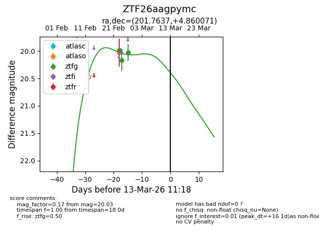
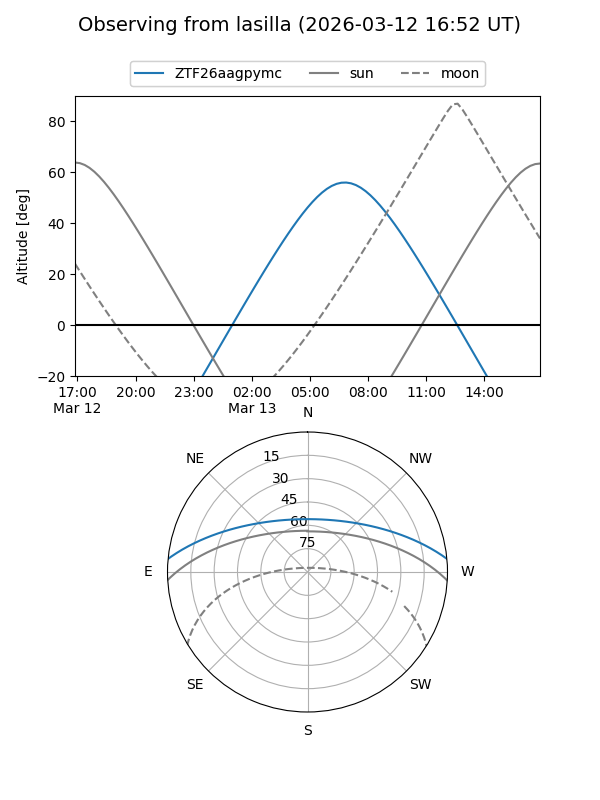
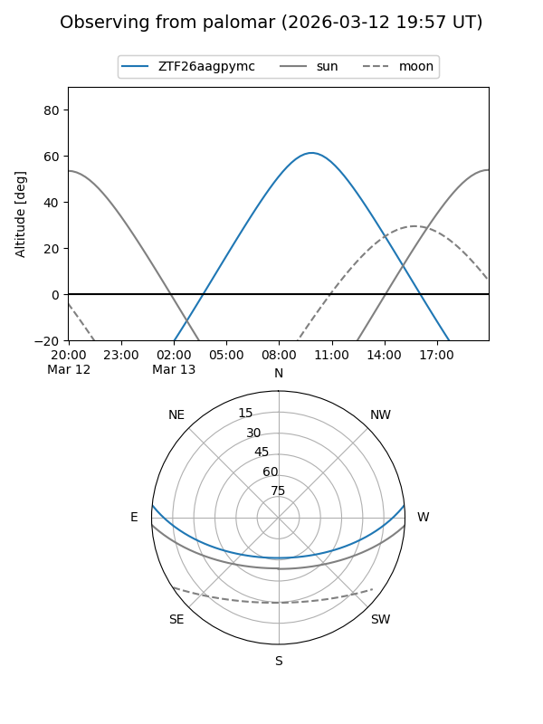
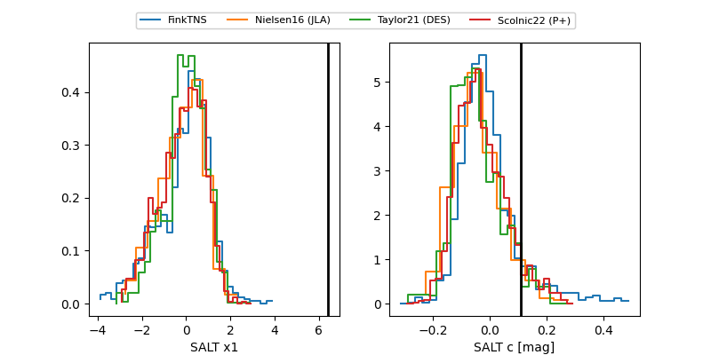

ZTF26aagpymc
Target ZTF26aagpymc at 2026-03-13 11:20
Aliases and brokers:
FINK: link
Lasair: link
ALeRCE: link
alt names
ZTF26aagpymc (ztf,fink_ztf)
Coordinates:
equatorial (ra, dec) = 201.7637,+4.86007
equatorial (HMS+DMS) = 13:27:03.29,+04:51:36.26
galactic (l, b) = (325.3706,+66.16786)
Flags:
Photometry:
last ztfg=20.03
3 ztfg detections
Lightcurve

Visibility


Additional plots
